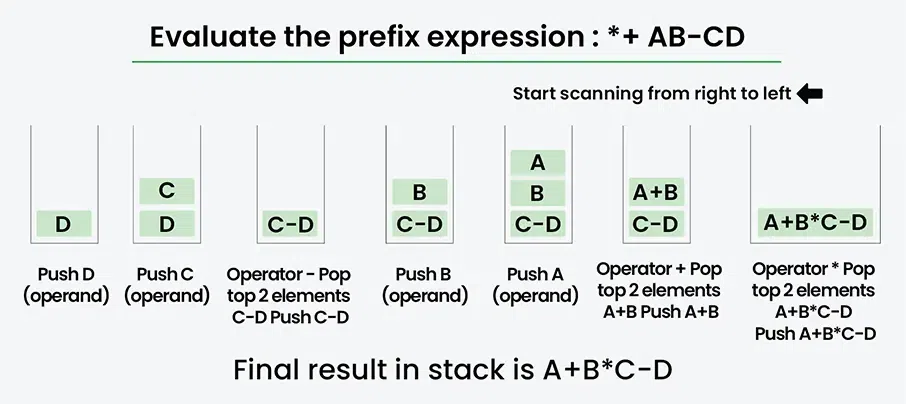

Prefix To Infix
Diberikan sebuah ekspresi Prefiks, ubahlah menjadi ekspresi Infiks. Komputer biasanya melakukan perhitungan baik dalam bentuk prefiks maupun postfix (biasanya postfix). Namun bagi manusia, ekspresi Infiks lebih mudah dipahami daripada ekspresi prefiks. Oleh karena itu, konversi diperlukan agar manusia dapat memahaminya.

- Infiks : Suatu ekspresi disebut ekspresi infiks jika operator muncul di antara operan dalam ekspresi
tersebut. Bentuknya sederhana, yaitu (operan1 operator operan2).
Contoh: (A+B) * (CD) - Awalan (Prefix ): Suatu ekspresi disebut ekspresi awalan jika operator muncul dalam ekspresi sebelum operan. Bentuknya sederhana, yaitu (operator operan1 operan2).
Contoh: *+AB-CD (Infiks: (A+B) * (CD))
Contoh
Masukan: Awalan: *+AB-CD
Keluaran: Sisipan: ((A+B)*(CD))
Masukan: Awalan: *-A/BC-/AKL
Keluaran: Sisipan: ((A-(B/C))*((A/K)-L))